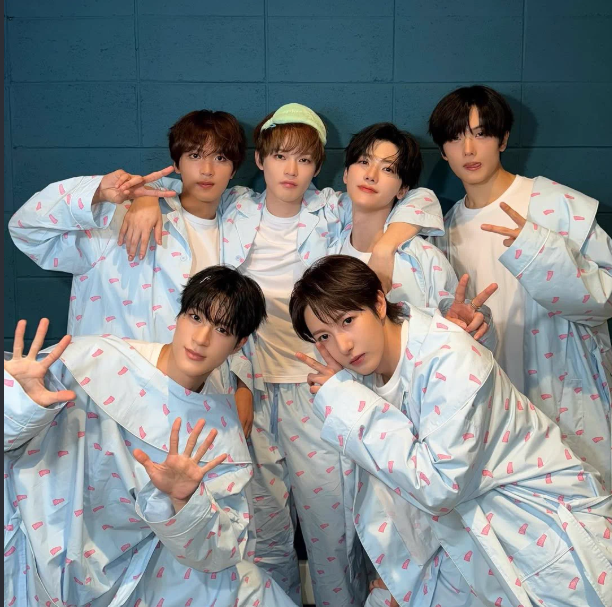

About NCT DREAM

NCT DREAM is a unit of NCT known for music and concepts centered around youth, growth, friendship, and growing up. Their music has developed with the members while still keeping the energetic style that makes the unit unique.
Members
- Renjun
- Jeno
- Haechan
- Jaemin
- Chenle
- Jisung
Some of My Favorite Songs
- Hello Future
- Broken Melodies
- Beatbox
- Life Is Still Going On
- Candy
Why I Like NCT DREAM
I like NCT DREAM because their music can be fun and energetic while also having songs that feel nostalgic and emotional. Their different eras also show how much the group has grown over time.